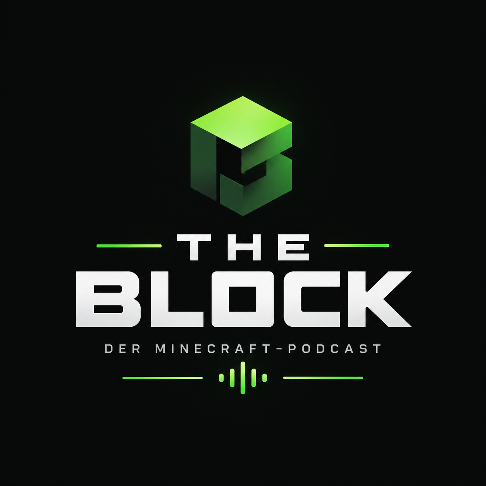

Lokrogamer
Host & Minecraft Enthusiast
Baut seit der Beta, liebt Redstone und tiefe Lore-Dives.

THE BLOCKPODCAST Bald verfügbarBald verfügbar
Der Minecraft-Podcast
Der Minecraft-Podcast für Gespräche, Geschichten und alles dazwischen.
„Minecraft ist mehr als Blöcke. Es sind die Geschichten, Projekte, Server und Menschen dahinter.“
Aktuell gibt es noch keine Folgen – du findest uns daher noch nicht auf Spotify. Hör dir bis dahin schon mal den Trailer an →
Trailer
Noch keine Folge da? Hier ein erster Eindruck vom Podcast.
Status
Es gibt aktuell noch keine Folgen – deshalb ist der Podcast auf Spotify noch nicht zu finden. Hör dir bis dahin schon mal den Trailer an – sobald die erste Folge erscheint, findest du hier automatisch die komplette Folgenliste.
01
Format, Themen und Rhythmus sind geplant – alle zwei Wochen eine neue Folge.
02
Wir nehmen gerade die ersten Gespräche auf und bauen alles in Ruhe auf.
03
Zum Start findest du uns hier und auf Spotify.
Über uns
Ein Podcast über Minecraft – aber nicht nur über das Spiel selbst.
Wir sprechen über Projekte, Communitys, Server, Updates, Erinnerungen, Trends und die Geschichten, die Minecraft seit Jahren begleiten.
Themen
Das erwartet dich zum Start – ehrliche Gespräche statt News-Ticker.
Spiel, Updates & Kultur
Stimmen aus der Szene
SMPs, Events & Drama
Architektur & Redstone
Patches & Snapshots
Legenden & Erinnerungen
Ideen zum Nachbauen
Fails & Fun-Momente
Hosts
Zwei Stimmen, ein Block – wir freuen uns auf den Launch mit euch.
Host & Minecraft Enthusiast
Baut seit der Beta, liebt Redstone und tiefe Lore-Dives.
Host & Community Nerd
Lebt für Server-Communities, Events und gute Geschichten.
Community
Der Podcast startet bald. Komm jetzt schon auf den Discord, tausch dich aus und verpass keine Neuigkeiten zum Launch.
Das beste Erlebnis gibt's auf Vercel – mit Animationen und allen Details.
Vollversion öffnen ↗